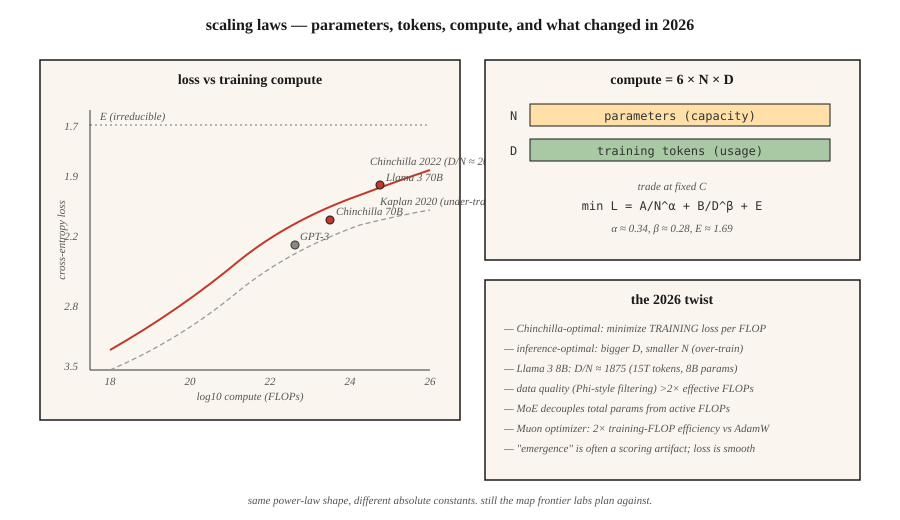

Scaling Laws
The 2020 Kaplan paper said: bigger model, lower loss. The 2022 Hoffmann paper said: you were under-training. Compute goes into two buckets — parameters and tokens — and the split is not obvious.
- Type
- Learn
- Languages
- Python
- Prerequisites
- Phase 7 · 05 (Full Transformer), Phase 7 · 07 (GPT)
- Time
- ~45 minutes
#The Problem
When you have C FLOPs of training compute and want the best model, you face two knobs:
- How many parameters (N)? Bigger model, higher capacity.
- How many training tokens (D)? More data, better use of capacity.
FLOPs scale approximately as 6 × N × D. You can push N up and D down, or D up and N down. Which is better?
Before 2022, the answer was "push N hard." GPT-3 (2020) was 175B parameters trained on ~300B tokens. A ratio of about 1.7 tokens per parameter. The Kaplan scaling laws backed this up.
Hoffmann et al. (2022), training a small family of models called Chinchilla, found something different: optimal ratio is closer to 20 tokens per parameter. GPT-3 was 10× undertrained. Chinchilla (70B params, 1.4T tokens) beat GPT-3 (175B, 300B tokens) on every benchmark at 2.5× less inference cost.
2026 is Chinchilla's world — with one important twist. Llama 3 8B was trained on 15 trillion tokens, a ratio of 1,875 tokens per parameter. Ninety-four times past Chinchilla-optimal. Inference cost matters more than training cost for models that will be used at scale, so over-training (past Chinchilla) for a smaller deployable footprint is the 2026 default.
#The Concept

#The Hoffmann law
From the Chinchilla paper, loss follows:
L(N, D) = A / N^α + B / D^β + EN= parameters (non-embedding).D= training tokens.α ≈ 0.34,β ≈ 0.28(roughly symmetric).E ≈ 1.69, the irreducible loss ceiling.A ≈ 406,B ≈ 411.
Two terms trade against each other as you scale. Take the derivative w.r.t. N at fixed compute (C = 6ND) and solve:
N_opt ≈ 0.6 × (C/6)^0.5
D_opt ≈ 0.6 × (C/6)^0.5
D_opt / N_opt ≈ 20Compute-optimal: 20 tokens per parameter.
#Why over-training anyway
Chinchilla-optimal minimizes training loss per training FLOP. But you pay training cost once; inference cost forever.
For a chatbot that serves a trillion tokens per month, inference dominates total cost. Llama's approach: train smaller, longer. 8B at 15T tokens is deeply inference-optimized:
- Fits on consumer GPUs.
- Latency is a fraction of 70B Chinchilla-optimal.
- Quality is close enough for most tasks.
DeepMind's 2024 paper ("Over-training is the new optimal") formalized this. For inference-dominated workloads, the right ratio is closer to 100–500 tokens per parameter depending on serving volume.
#Emergence vs smoothness
Claim: certain abilities (arithmetic, multi-step reasoning, chain-of-thought following) "emerge" suddenly at some scale.
Schaeffer et al. (2023) argued this is a measurement artifact: emergent metrics use discontinuous scoring (exact match, accuracy at threshold) that hide smooth improvement in the underlying logits. Continuous metrics (cross-entropy) show smooth curves.
In 2026 the consensus is: predictions via continuous loss are reliable. Benchmark jumps are often scorer artifacts. Plan budgets against continuous metrics.
#The 2026 picture
Scaling laws still work, but:
| Factor | Changed how |
|---|---|
| Data quality | Curating "good" tokens (Phi-style) shifts curves by >2× effective compute |
| MoE | Total params decouple from active FLOPs; scaling laws per-active-FLOP |
| Post-training | Some capabilities (instruction following, code) shift with SFT+RLHF more than pretraining |
| Multimodality | Image + text tokens scale together; separate curves per modality |
| Synthetic data | Models generate training data; effective compute can compound |
The Muon optimizer (Kimi Moonlight, 2024) showed a ~2× effective-compute gain over AdamW at matched data. Some 2026 training runs use Muon by default. Changes the absolute constant in the scaling law, not its shape.
#Build It
See code/main.py. We implement the Chinchilla loss equation and solve for compute-optimal (N, D) at each of several compute budgets.
#Step 1: Chinchilla loss
def chinchilla_loss(N, D, A=406.4, B=410.7, alpha=0.34, beta=0.28, E=1.69):
return A / N ** alpha + B / D ** beta + EPlot L as a contour over (N, D) at fixed C = 6ND. Find the minimum.
#Step 2: compute-optimal frontier
For compute budgets from 1e17 to 1e25 FLOPs, find (N, D) that minimize loss subject to 6ND = C. Verify the ratio D/N ≈ 20.
#Step 3: over-training cost
Compute the extra loss you pay to train a 10× smaller model (1/10 of optimal N, 10× the optimal D). Reports the inference FLOP savings (proportional to N) in exchange.
#Step 4: compare to real models
Drop in known (N, D) pairs for GPT-3, Chinchilla, Llama 3 8B, DeepSeek-V3 (active params), and compare predicted vs reported loss.
#Use It
You're unlikely to train a frontier model yourself. But scaling laws tell you:
- Whether your fine-tune has enough data. If your task-specific data is below 20 tokens per param of the base model, expect saturation at some loss floor.
- Whether to pick a bigger base model. If you're spending all your budget on inference, prefer a smaller, longer-trained model.
- Where the returns diminish. Beyond 1000× Chinchilla-optimal, log-loss changes become noise.
The research trajectory in 2026:
- Data-constrained regime. The web has a finite number of high-quality tokens (~5–10 trillion English after filtering). Frontier pretraining is approaching this ceiling. Synthetic data, multilingual, multimodal, and RLHF-scaled fine-tuning are the next levers.
- Compute-multiplier tricks. Muon optimizer, MoE, better data curation — each shifts the absolute constants, not the asymptote.
- Scaling laws for RL. Open question. Early evidence suggests power-law in RL samples but with very different exponents than pretraining.
#Ship It
See outputs/skill-training-budget-estimator.md. The skill picks (N, D, hours, GPU) for a new training run given compute budget, deployment constraints, and target loss.
#Exercises
- Easy. Run
code/main.py. Print Chinchilla-optimal(N, D)for compute budgets1e20,1e22,1e24. Compare to the real model table. - Medium. Implement the Hoffmann loss-as-function-of-compute curve. Plot loss vs
log10(C)for the compute-optimal frontier. Identify when the law predicts we'd need>10^28FLOPs for the next 0.1 reduction in cross-entropy. - Hard. Fit your own scaling law on 5 tiny models (100K to 10M params) trained on the same dataset. Estimate
αandE. How well do your exponents match published ones?
#Key Terms
| Term | What people say | What it actually means |
|---|---|---|
| Parameters (N) | "Model size" | Non-embedding weight count; determines capacity. |
| Tokens (D) | "Training data" | Number of training tokens seen; determines how well the parameters get used. |
| Compute (C) | "FLOPs spent" | Approximately 6 × N × D for a standard transformer. |
| Chinchilla-optimal | "D/N ≈ 20" | Ratio that minimizes loss per FLOP of pretraining. |
| Over-training | "Past Chinchilla" | Spend extra training FLOPs to save inference FLOPs; D/N >> 20. |
| Irreducible loss | "The floor" | The E term in the scaling law; the entropy of the data itself. |
| Emergent capability | "Sudden jumps at scale" | Often a scorer artifact; continuous loss is smooth. |
| Effective compute | "Training-efficiency multiplier" | Better data / optimizer / architecture multiplies how far a FLOP goes. |
#Further Reading
- Kaplan et al. (2020). Scaling Laws for Neural Language Models — the first scaling law paper; undertrained.
- Hoffmann et al. (2022). Training Compute-Optimal Large Language Models — Chinchilla.
- Schaeffer et al. (2023). Are Emergent Abilities of Large Language Models a Mirage? — emergence as measurement artifact.
- Sardana, Frankle (2024). Beyond Chinchilla-Optimal: Accounting for Inference in Language Model Scaling Laws — why Llama's over-training is right for its workload.
- Jordan et al. (2024). Muon: An optimizer for hidden layers in neural networks — 2× compute multiplier.
Nice. That's 5 minutes of Transformers Deep Dive behind you.
Continue to Build a Transformer from Scratch — The Capstone →